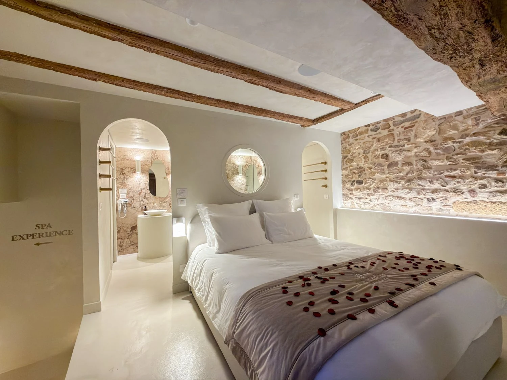

Demande en mariage :
où et comment la préparer
Un genou à terre au milieu d'un restaurant, sous le regard de tables voisines qui n'ont rien demandé : c'est souvent ce qu'on redoute le plus. Voici comment organiser l'instant ailleurs, en privé, près de Lyon.

La plupart des demandes en mariage ratées ne le sont pas à cause de la question, mais du décor : un lieu trop public, un timing mal choisi, une mise en scène improvisée au dernier moment. Ce qui suit n'est pas un scénario à copier, mais une liste de choix qui, une fois faits à l'avance, laissent toute la place à l'instant lui-même.
Choisir un lieu privé plutôt qu'un lieu spectaculaire
Un point de vue sur Lyon ou une terrasse remarquable semblent une bonne idée sur le papier, mais ils imposent une contrainte : d'autres personnes, une météo incertaine, un horaire d'ouverture. Une suite privatisée retire cette variable. Personne d'autre dans la pièce, aucune fenêtre météo à guetter, et la liberté de choisir l'heure exacte qui vous convient.
Faire préparer la pièce avant votre arrivée
C'est le détail qui change tout et qui demande le moins d'efforts de votre part : pétales de rose sur le lit, champagne au frais, lumière tamisée déjà réglée à votre arrivée. Il suffit de prévenir l'hôte de l'occasion au moment de la réservation — la surprise se prépare pendant que vous êtes encore sur la route.
Choisir le bon moment de la soirée
Ni trop tôt, au moment de poser les valises, ni trop tard, une fois la fatigue installée. Le créneau qui fonctionne le mieux se situe après le dîner, une fois le bain à remous allumé et la pièce entièrement à vous : le rythme ralentit naturellement, sans qu'il soit nécessaire de forcer un silence ou une transition.
Immortaliser l'instant sans le gâcher
Un photographe caché derrière un bosquet peut fonctionner en extérieur, mais devient vite maladroit dans un espace privé. La solution la plus simple reste un trépied et un smartphone, réglés avant l'arrivée, discrets dans un coin de la pièce. Vous gardez l'instant sans avoir à penser à qui le capture.
Et après la demande ?
Le temps qui suit compte autant que la question elle-même. Une nuit sans rien d'autre à faire ni personne à prévenir dans l'heure permet de rester dans l'instant un peu plus longtemps avant que les messages et les appels ne commencent. Le lendemain matin, sans réveil ni check-out précipité, prolonge encore la parenthèse.
Quelques attentions qui changent tout
- Prévenir l'hôte de l'occasion dès la réservation, sans détailler le scénario
- Prévoir la bague sur vous avant d'arriver, pas dans une valise à fouiller
- Choisir une date où vous n'avez rien de prévu le lendemain matin
- Garder le téléphone de secours chargé, pour la photo ou l'appel juste après
Questions fréquentes
Où faire sa demande en mariage près de Lyon, en privé ?
Un lieu privatisé évite l'imprévu d'un espace public : pas de passants, pas d'attente d'une fenêtre météo, pas de regard extérieur au moment où l'un de vous dit oui. Une suite avec spa privatif à Villefranche-sur-Saône, à 40 minutes de Lyon, permet de maîtriser entièrement le décor et le timing.
Peut-on faire préparer la chambre avant l'arrivée pour une demande en mariage ?
Oui, à La Voûte des Sens, pétales de rose, champagne et attentions particulières peuvent être installés avant votre arrivée. Il suffit de préciser l'occasion au moment de la réservation, sans avoir à en dire davantage.
Faut-il réserver longtemps à l'avance pour une demande en mariage ?
Mieux vaut s'y prendre a minima deux à trois semaines avant, surtout pour un samedi ou une date symbolique (Saint-Valentin, anniversaire de rencontre). Cela laisse le temps d'organiser la préparation de la chambre sans précipitation.

La Voûte des Sens
Une voûte de pierre,
deux personnes.
Balnéo privative, douche sensorielle et pièce secrète, à Villefranche-sur-Saône, à 40 minutes de Lyon. 5,0/5 sur 20 commentaires.